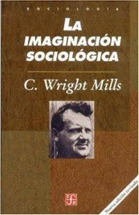
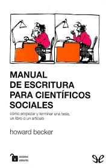
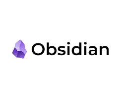
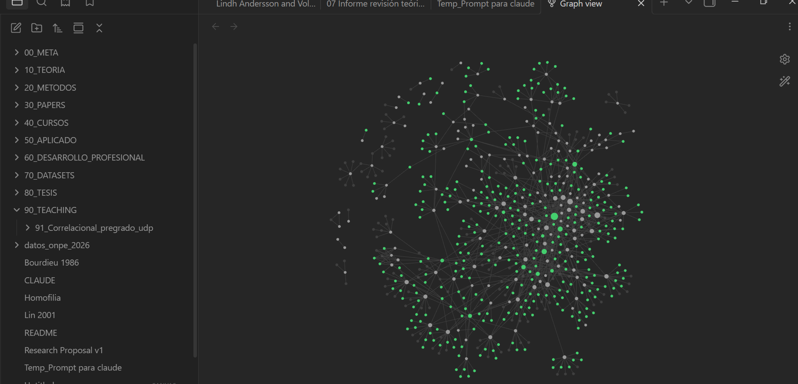

Sobre artesanIA intelectual
Un flujo de trabajo para la investigación social en tiempos de IA
Alejandro Plaza Reveco Instituto MIDE UC · Pontificia Universidad Católica de Chile
Taller para ayudantes de investigación · Septiembre 2026
Antes de hablar de herramientas: ¿qué significa hoy saber investigar?
Buscar literatura Resumir papers Escribir código Generar hipótesis
Producir figuras Revisar textos Escribir un primer borrador
La provocación Muchas de estas tareas son hoy más rápidas, más baratas y parcialmente automatizables. Entonces, ¿qué significa saber investigar?
Vamos a responderla mirando qué parte del proceso requiere criterio científico y responsabilidad intelectual.

C. Wright Mills (1959)
La imaginación sociológica, apéndice

Howard S. Becker (1986)
Manual de escritura para científicos sociales
El punto de encuentro: los dos ponen en el centro los mismos dos artefactos — el archivo y el borrador — que son, justamente, los dos que la IA toca primero.
Mills Las buenas preguntas aparecen al conectar elementos que al inicio estaban separados: biografía ↔︎ historia ↔︎ estructura
Becker Las ideas se terminan mientras se escriben: borrador → revisión → mejor argumento. Escribir también es investigar.
Ejecutar una técnica es una habilidad. Saber cuándo usarla, por qué usarla y qué significa el resultado es oficio.
Antes: operaciones costosas Encontrar literatura · resumir decenas de papers · escribir y depurar código · producir un primer borrador · explorar muchas alternativas
Ahora: producción abundante Podemos encontrar más · resumir más · programar más · escribir más · generar más ideas
Entonces, ¿qué se vuelve escaso?
CRITERIO SELECCIÓN EVALUACIÓN INTEGRACIÓN RESPONSABILIDAD
Producir información se vuelve barato. Lo que gana peso es decidir qué merece atención, qué es creíble y qué podemos afirmar a partir de la evidencia.
El principio La IA puede asistir todas las etapas. El juicio que conecta una etapa con la siguiente se queda con nosotros.
Si producir información se vuelve barato, necesitamos un workflow que preserve el criterio.
“Criterio” se vuelve operativo cuando se traduce en preguntas concretas. En cada estación van a ver la misma franja al pie de la slide, con tres campos:
Delego Lo que la IA hace mejor, más rápido o más barato que yo, y que puedo revisar.
No delego Lo que, si lo entrego, deja de ser investigación mía. Casi siempre: el juicio.
Cómo verifico La prueba concreta que me dice si lo delegado está bien.
La regla que ordena todo el taller
Delego lo que puedo verificar.
La tercera columna manda sobre las otras dos.
| Tipo | Costo | Ejemplo concreto |
|---|---|---|
| Automática | segundos | Corro 00–03 y la Tabla 2 se regenera idéntica |
| De existencia | un clic | El DOI resuelve y el paper existe, con esos autores y ese año |
| De consistencia | un minuto | El N del output coincide con el N declarado en el PAP |
| De contenido | minutos | Abro el PDF en la página citada y dice lo que la ficha dice |
| De juicio | horas | Leo el paper completo y decido si el argumento se sostiene |
Cómo se usa esta tabla Mientras más arriba esté la verificación disponible, más se puede delegar esa tarea. Las tres primeras filas habilitan el trabajo asistido a escala; la última se queda con nosotros y es la que define el oficio.
El proceso tiene estaciones claras, donde cada herramienta hace una cosa y donde el criterio sigue siendo tuyo.
En dorado: los dos anclajes del proceso — el segundo cerebro y el PAP. Todo lo demás gira en torno a ellos. Esta es la versión que cabe en un ascensor. La siguiente es la real.
Hay retornos, ramas muertas y trabajo en paralelo.
El mapa y el territorio Una ruta dibujada y un viaje son dos cosas distintas. El mapa sirve para saber dónde estás y qué falta. El viaje lo haces tú, con los desvíos que aparezcan. Cuando el mapa estorba, se dobla y se guarda.
Estaciones 1 a 3: de una intuición a un corpus fichado
El punto de partida es un tema que me genera curiosidad. El objetivo de esta estación es llegar a una versión pequeña del problema: qué es, cómo funciona, por qué podría importar.
Ejemplo: el que vamos a seguir todo el taller “Las instituciones formales cambian la vida de la gente. ¿Cambian también la estructura de sus relaciones? ¿Qué pasa con una red de apoyo cuando llega un banco?”
Delego Reformular, buscar contraejemplos, nombrar tensiones, traducir la intuición al vocabulario del campo.
No delego Elegir qué me importa. La curiosidad se queda conmigo.
Cómo verifico Nada formal todavía: esta estación no produce material citable, y por eso se puede explorar libre.
La pregunta Cómo las instituciones formales modifican la estructura de las redes interpersonales. Caso empírico motivante: la expansión del microcrédito formal en la India rural.
La insuficiencia que quiero postular La literatura discute crowding in contra crowding out midiendo cantidades agregadas: confianza, participación, tamaño y densidad de la red. Mi sospecha es que una misma intervención puede sacar unas funciones relacionales y meter otras al mismo tiempo: quitar el préstamo informal y dejar intacto el apoyo emocional, o eliminar los lazos que cruzan castas y crear otros dentro del mismo grupo.
El concepto propio Institutional rewiring: el proceso por el cual un cambio en la provisión institucional formal altera los mecanismos que gobiernan la formación, mantención, disolución y composición social de las relaciones interpersonales.
Retengan esa definición: es la pieza que hace funcionar todo el prompt.
Un buen prompt de revisión tiene partes identificables. Estas cuatro definen qué se busca.
Tu concepto, definido en una oración. «Institutional rewiring: el proceso por el cual…» Sin esto, el motor devuelve el campo entero.
El caso motivante, con su límite explícito. «El caso es el microcrédito en India rural, pero la revisión no debe restringirse a microfinanzas, economía, India ni países de bajos ingresos.»
La insuficiencia teórica que estás postulando. «Quiero investigar si el marco crowding in/out es incompleto porque la misma intervención puede…»
Las dimensiones con las que quieres el material ordenado. Función relacional · fronteras sociales · posición estructural. Son las carpetas en las que quieres recibir los papers.
El punto 4 es el que más rinde y el que casi nadie escribe: define la forma del output antes de que el motor busque.
Estas tres partes controlan dónde busca y qué descarta.
Los mecanismos, nombrados. Sustitución funcional · complementariedad institucional · emancipación relacional · colapso multiplex · vulnerabilidad de los puentes · encuentros producidos institucionalmente. Le entregas el vocabulario con el que quieres que te devuelva el material.
Seed papers y autores. Banerjee et al. · Binzel et al. · Dupas et al. · Valente · Jackson; y las tradiciones: Simmel, Blau, Granovetter, Burt, Lin, Small. Esto es lo que habilita el snowballing.
Criterios de inclusión y de exclusión. Los de exclusión filtran más: «excluir estudios donde las redes aparecen sólo como canales fijos de difusión, o donde capital social se mide con un único ítem de confianza generalizada».
Una línea que vale por sí sola “No asumas que todos estos autores sostienen la misma posición teórica. Úsalos para identificar marcos en competencia.”
Pedir “un resumen de la literatura” devuelve prosa. Pedir columnas por nombre devuelve algo con lo que se puede trabajar.
Matriz de evidencia Una fila por paper, con columnas nombradas: cita, disciplina, país, intervención · diseño, tipo de red, ¿longitudinal? · resultado relacional y estructural · mecanismo propuesto · fuerza causal · limitación para mi proyecto
Los otros entregables Mapa conceptual de tradiciones teóricas · comparación de mecanismos con evidencia a favor y en contra · modelos teóricos rivales con predicciones distintas · strings booleanos para lo que quedó sin buscar
La mejor pregunta de todo el prompt “Evalúa la novedad de esta contribución: qué ya está establecido, qué se estudió por separado, qué es genuinamente nuevo, y qué afirmación de novedad sería indefendible.”
Reglas que escribo en el prompt
Lo que reviso al recibir el output
El output cumple una función precisa: ordenar el terreno y nombrar a los candidatos. Después viene la lectura.
Precisión terminológica Esto es una búsqueda semántica asistida, y funciona muy bien para lo que hace. Una revisión sistemática exige además protocolo registrado, criterios preespecificados, exhaustividad demostrable y reproducibilidad del proceso. Son dos cosas distintas, y un revisor distingue la diferencia.
Nómbrenlo así en un paper “mapeo de literatura” · “búsqueda exploratoria estructurada” · “revisión narrativa asistida”
Y si quieren la palabra completa Agreguen las tres piezas que faltan: protocolo escrito antes de buscar, criterios de inclusión y exclusión declarados, y registro de búsqueda reproducible. Las dos primeras ya las tienen en el prompt; la tercera viene en dos slides.
Elicit Extracción estructurada de hallazgos por paper. Bueno para comparar diseños y muestras.
SciSpace Lectura y explicación de papers; síntesis temática larga. Bueno para entrar a una literatura ajena.
Consensus Qué dice la evidencia agregada sobre una pregunta. Bueno para calibrar si hay consenso.
La regla de oro Lo que le pido a las plataformas es que me devuelvan los papers más importantes y me digan cómo se ordena el campo. La lectura sigo haciéndola yo.
Delego Recuperar candidatos, extraer diseño, datos y muestra, mapear el vocabulario del campo.
No delego Decidir qué es importante. El ranking del motor mide relevancia semántica, no calidad.
Cómo verifico Todo paper que cito lo abrí. Los que no abrí quedan en el registro de búsqueda, no en el paper.
Los motores semánticos optimizan relevancia respecto a tu fraseo. La centralidad de un paper en su campo es otra cosa, y por eso los clásicos aparecen poco: usan palabras distintas a las tuyas.
Herramientas Connected Papers · Litmaps · Scopus · “Citado por” de Google Scholar
Regla práctica Si un paper aparece en la bibliografía de tres de tus semillas y no lo tenías, ese es el paper que te faltaba leer.
De decenas de resultados, unos pocos merecen lectura completa.
Papers de información — fichado ligero Aportan antecedentes y evidencia empírica. Se anotan y fichan en superficie. “En Hungría se reportan mayores niveles de homofilia.”
Papers con argumento — leer completo Hacen una contribución teórica disciplinada. Aquí me detengo y leo íntegro. Ej.: «Love Thy Neighbor» (Baldassarri); Binzel et al. para nuestro caso.
El output de estas plataformas es largo y vive fuera de mi archivo. El registro de búsqueda es el paso que lo convierte en una nota más del segundo cerebro.
Qué gano con eso La búsqueda queda buscable: dentro de seis meses encuentro qué busqué y qué descarté · el frontmatter permite filtrarla junto a las demás notas del proyecto · los papers incluidos quedan enlazados a sus fichas con [[ ]]
Es una nota de Obsidian como cualquier otra: frontmatter arriba, contenido abajo.
---
titulo: "Busqueda -- institutional rewiring (cluster 1)"
tipo: registro-busqueda fecha: 2026-09-08
motor: SciSpace
temas: [redes-sociales, welfare-state]
relevancia_papers: [redes-desigualdad]
estado: procesado
n_recuperados: 47 n_incluidos: 6
---
# Que busque
Instituciones formales y cambio en estructura de redes.
# Que excluí y por que
28 no miden redes ; 9 solo simulacion ; 4 duplicados
# Incluidos
- [[Binzel_etal 2020]] -- COMPITE con mi gap: efectos sobre
lazos inter-subcasta
- [[Dupas_etal 2019]] -- APORTA sustitucion funcional
# Sesgo detectado
0 resultados en espanol ; ningun libro. Revisar SciELO.Antes de la Estación 3, la herramienta donde vive el archivo

.md en una carpeta de tu disco. Esa carpeta se llama vault$\beta_1$ dentro de una nota y se renderiza como β₁Por qué texto plano y no un gestor bibliográfico Un gestor guarda referencias. Un vault en texto plano guarda ideas, notas propias, borradores y referencias en el mismo espacio, y deja que se enlacen entre sí. Los dos conviven: las referencias siguen en Zotero.
Markdown es texto normal con unas pocas marcas. Lo que ven es lo que uno escribe.
# Titulo ## Subtitulo ### Sub-subtitulo
**negrita** *cursiva* `codigo`
- item de lista
> cita textual
#un-tag <- CLASIFICA: agrupa notas por concepto
[[Otra nota]] <- ENLAZA: conecta esta nota con otra
[[Otra nota|como digo]] <- enlaza mostrando otro texto
$\beta_1$ <- LaTeX inline (plugin de ecuaciones)Las dos marcas que importan para el segundo cerebro #tag clasifica: una nota puede llevar muchos, y agrupa por concepto. [[enlace]] conecta: une esta nota con otra específica, y es lo que dibuja el grafo.
Todo lo que leo se ficha en el vault. La clave es el doble vínculo: conecto ideas por #tags y por enlaces [[ ]].
#tags son conceptos; los [[enlaces]] unen papers con notas propias#crowding-in y veo todas las fichas conectadas a esa ideaEs el “fichero” de Mills, en markdown y con búsqueda.
| Delegable: campos mecánicos | Mío: campos de juicio |
|---|---|
| Metadata, autores, año, DOI | Idea central en una frase |
| Datos, muestra, método, medidas | Conexión con mi argumento |
| Resumen del diseño de identificación | La objeción: qué no me convence |
| Tags candidatos del esquema | Los [[enlaces]] y su verbo |
El antipatrón que hay que reconocer Una ficha con la columna izquierda perfecta y la derecha generada queda correcta y vacía: produce la apariencia del trabajo sin el trabajo. Es el modo de falla característico del fichado asistido, y pasa desapercibido porque el texto se ve bien.
Delego Todo lo mecánico y verificable contra el PDF.
No delego La idea central, la conexión y la objeción. Ahí está el valor compuesto del archivo.
Cómo verifico Leo la ficha seis meses después y reconstruyo por qué guardé ese paper.
Idea atómica + enlaces con verbo + una objeción propia.
---
titulo: "Binzel et al. 2020 -- Formal financial institution"
autor: Binzel, Field, Pande, Paul-Delvaux
anio: 2020 tipo: articulo
temas: [redes-sociales, crowding-in]
relevancia_papers: [redes-desigualdad]
estado: procesado
---
# Idea central
La llegada de un banco formal reduce la cooperacion comunitaria
y los lazos que cruzan subcastas.
## Conexiones (cada enlace lleva su VERBO)
- [[Homofilia]] -- FORMALIZA la seleccion de vinculos
- [[Dupas_etal 2019]] -- COMPLEMENTA con sustitucion funcional
- [[@inst-rewiring]] -- COMPITE: cubre parte de mi gap
## Objecion
Mide cooperacion con un juego de bienes publicos: valido para
comportamiento, mudo sobre la estructura de la red.Un modelo de lenguaje enlaza cualquier cosa con cualquier cosa por similitud superficial. Cuando todo conecta con todo, el grafo deja de informar.
Enlaces que no dicen nada
[[Granovetter]] — se relaciona con[[Blau]] — tema similar[[Burt]] — relevanteEnlaces con verbo
[[Granovetter]] — FUNDA el mecanismo de lazos débiles[[Blau]] — PREDICE lo contrario en contextos consolidados[[Burt]] — MIDE la posición que yo asumo sin medirSe crea un [[enlace]] cuando se puede nombrar la relación con un verbo.
“Se relaciona con” funciona como excusa, no como verbo.
Mills dice que reordenar el fichero es el método de invención: uno yuxtapone carpetas que no iban juntas y ahí aparece el problema. Con un archivo grande, esa operación se hace difícil a mano.
Consultas de bajo retorno
Comprimen lo que ya sabías.
Consultas de alto retorno
@marco-teorico-p2?”Delego Recorrer el archivo completo buscando tensiones y vecindades improbables.
No delego Decidir si la tensión es interesante o es coincidencia de vocabulario.
Cómo verifico Abro las dos fichas: la contradicción tiene que estar en el texto, no en el resumen.
NotebookLM — lectura acotada Opera sobre un corpus cerrado que tú subes, y cita al párrafo.
Pregunta típica: “¿Qué dice exactamente este paper sobre la medición de homofilia?”
Ventaja: se mantiene dentro de las fuentes, y la cita es verificable en un clic.
Claude sobre el vault — memoria Opera sobre el archivo acumulado y conoce las reglas de la casa (el CLAUDE.md).
Pregunta típica: “¿Qué tengo yo sobre esto, y dónde se contradice?”
Ventaja: compone en el tiempo. Cada ficha nueva mejora todas las consultas futuras.
La distinción de fondo Una hace lectura. La otra hace memoria. Tenerlas claras explica por qué a veces “la IA resume mal los papers”: se le está pidiendo memoria a una herramienta de lectura, o al revés.

Los racimos son literaturas: welfare state, redes, clivajes. Aparecen solos, sin que nadie los declare.
Los nodos puente son casi siempre notas propias (@): las ideas que conectan dos literaturas son las candidatas a paper.
Los nodos aislados son fichas que nunca enlacé. Cada uno es una pregunta pendiente: ¿por qué guardé esto?
El vault es una carpeta. Se le da acceso a esa carpeta, y a ninguna otra. En la práctica: Claude Desktop con acceso al sistema de archivos, o Claude Code abierto dentro del directorio del vault.
En la raíz viven CLAUDE.md y README.md. Se leen al inicio de cada sesión, antes de responder nada.
Permisos por etapas. Primero sólo lectura. La escritura se habilita cuando el contrato ya funciona, y con la regla de confirmar antes de mover o renombrar archivos.
Red de seguridad. El vault está en Dropbox y bajo control de versiones, así que cualquier cambio es reversible.
Lo que se queda fuera de la carpeta Datos individuales de terceros sin anonimizar, manuscritos ajenos en revisión, e instrumentos bajo convenio institucional. Esos viven en otra parte del disco, fuera del alcance del asistente.
README.md — para humanos
00_META a 80_TESIS)Apellido YYYY.md, Korpi_Palme 1998.md, @nota-propia.mdEs el mapa del vault. Lo lee un coautor nuevo, o yo en seis meses.
CLAUDE.md — para el asistente
Es el contrato. Sin él, cada sesión empieza de cero y el asistente inventa convenciones nuevas.
Escribir estos dos archivos toma una tarde. Es la inversión con mejor retorno de todo el flujo.
CLAUDE.md# CLAUDE.md -- Contexto del vault
## Instruccion de uso
Lee este archivo al inicio de cada sesion antes de responder.
## Convenciones
- Fichas de lectura: Apellido YYYY.md (Mouw 2003.md)
- Notas propias: prefijo @ (@marco-teorico.md)
- Frontmatter YAML obligatorio en toda nota nueva
## Nivel tecnico
Usuario avanzado de R. No explicar estadistica basica ni intermedia.
Codigo en estilo tidyverse por defecto.
## Como trabajar conmigo
- Referencias: usa SOLO lo que encuentres en el vault. Nunca inventes
fuentes ni atribuyas argumentos sin haberlos leido en las notas.
- Gaps: si no encuentras algo en el vault, dilo explicitamente.
No rellenes con conocimiento general sin avisar.
- Reorganizacion de archivos: confirma siempre antes de ejecutar.Las tres reglas del final son las que más trabajo hacen: acotan la fuente, obligan a declarar los vacíos y ponen un freno antes de tocar archivos.
CLAUDE.md + README.md) es lo que hace que el fichado asistido sirvaEstaciones 4 y 5: comprometerse con una idea (o soltarla)
Con el corpus fichado, vuelvo a sistematizar lo que tengo. Antes de escribir una línea del paper, hay una pregunta que decide todo:
La pregunta que va primero ¿La idea flota? ¿Funciona como aporte? Y sobre todo: ¿funciona para un buen journal?
El costo oculto de la IA: la abundancia Con IA podemos generar y cubrir muchas ideas. El recurso que escasea pasa a ser el tiempo, y con él la selectividad: en qué voy a gastar mis semanas.
Archivar es el resultado más frecuente, y es un buen resultado: una idea archivada con su PAP queda como capital disponible.
Delego Sistematizar el corpus, listar qué se sabe y qué falta, contrastar el fit de journals.
No delego La decisión. Define en qué gasto los próximos seis meses.
Cómo verifico Escribo el aporte en una frase. Si necesito un párrafo, todavía no flota.
Si la idea flota, construyo un plan de preanálisis (PAP): el esqueleto completo del estudio, antes de tocar los datos en serio.
Qué contiene
Para qué sirve (de verdad)
Por qué importa el mapa Sin PAP uno puede leer literatura para siempre o recodificar para siempre. El PAP dice: “esta es tu idea, y esto hay que cerrar”.
Delego Estructurar el documento y proponer los chequeos de robustez del diseño.
No delego Las hipótesis, la elección teórica y las decisiones de medición.
Cómo verifico Cada decisión queda fechada. Si después cambio una, queda el registro.
Escribir el PAP fuerza a dibujar el argumento causal antes de estimar.
La ruta punteada U → X, U → Y es la puerta trasera que el diseño (efectos fijos, IV, matching) debe cerrar. El PAP la declara antes de mirar los resultados.
Nota deliberada: en esta slide la IA no aparece Un modelo puede listar estrategias de identificación genéricas. Saber qué confunde este caso sale de la literatura que leíste y del terreno que conoces.
Estaciones 6 y 7: código reproducible y escritura estratégica
El análisis siempre arranca con la misma estructura de carpetas.
proyecto-rewiring/
|-- input/
| \-- data/
| |-- raw/ <- datos originales, NUNCA se editan
| \-- processed/ <- bases limpias y de trabajo
|-- output/
| |-- figures/
| \-- tables/
|-- scripts/ <- ver siguiente slide
|-- documents/
| \-- PAP.md
|-- renv.lock <- entorno congelado (paquetes + versiones)
\-- README.md <- que es esto, como se corre, en que ordenReglas intocables: raw/ es sólo lectura; la semilla se fija en el script; el entorno queda congelado. Todo lo demás se reconstruye corriendo los scripts.
Los scripts se nombran con prefijo numérico según el orden en que se corren. Cada uno hace una cosa.
| Script | Qué hace |
|---|---|
00_procesamiento.R |
Recodificación, merge, construcción de la base maestra |
01_descriptivos.R |
Univariados, bivariados, tablas y figuras descriptivas |
02_multivariado.R |
Modelos principales (la estimación del PAP) |
03_robustez.R |
Chequeos de robustez y análisis de sensibilidad |
La prueba de fuego — guárdenla, reaparece en el Acto IV Borro processed/ y output/, corro 00 a 03 en orden, y el paper se reconstruye entero. Cuando eso ocurre, el pipeline está sano.
Delego Escribir y depurar código, recodificar, generar tablas y figuras, redactar el README.
No delego Qué se estima y por qué. El código implementa el PAP.
Cómo verifico La prueba de fuego: barata, automática e independiente de quién escribió el código.
Un paper construye un argumento sobre tres pilares. Todo párrafo de la introducción trabaja para uno de ellos.
1. El gap — qué NO sabemos “A pesar de la extensa investigación sobre X, sigue sin saberse si …”. La literatura previa establece A, y deja abierto B por una limitación teórica o de datos.
2. El argumento — por qué creemos que el mundo funciona así Tu respuesta original a esa pregunta. Aquí casi no hay citas: es tu tesis.
3. La contribución — qué cambia si tenemos razón Ordenada por importancia. En sociología, la contribución teórica pesa más que la puramente empírica. Se adelanta toda a la intro: al llegar a la conclusión, el revisor ya decidió.
La introducción, párrafo a párrafo
Sin párrafo “roadmap”. En 4–5 páginas ya cerraste la intro.
Un mismo proyecto, tres audiencias
Las citas de la intro eligen a tus revisores. Enmarca el mismo estudio según el journal:
“Usar IA para escribir” agrupa tres operaciones con riesgos muy distintos.
| Nivel | Qué es | Régimen |
|---|---|---|
| Superficie | Gramática, preposiciones, inglés como L2 | Delegación libre |
| Estilo | Concisión, voz activa, nominalizaciones | Frase a frase, con diff |
| Argumento | Qué se afirma y con cuánta fuerza | Reescribo yo encima |
El principio operativo Prefiere herramientas que produzcan diffs sobre las que produzcan reemplazos. Con control de cambios (Refine Ink, track changes) ves y aceptas cada corrección: la autoría queda trazable y aprendes tus errores recurrentes.
Delego Corrección de superficie; propuestas de concisión frase a frase.
No delego El primer borrador de la intro y la discusión: ahí está el argumento.
Cómo verifico Reviso el diff completo. Si acepté un cambio que no puedo explicar, lo revierto.
Becker diagnosticó una prosa: sus estudiantes escribían mal porque intentaban sonar como académicos. Esa prosa es, hoy, la salida por defecto de un modelo de lenguaje.
| Lo que sale por defecto | Lo que queremos |
|---|---|
| “Es importante destacar que los resultados podrían sugerir una posible asociación positiva entre X e Y” | “X aumenta con Y” |
| “La implementación de la política tuvo como resultado una reducción de la informalidad” | “La política redujo la informalidad” |
| “Se procedió a la realización de un análisis de sensibilidad” | “Hicimos un análisis de sensibilidad” |
| “No se trata de una cuestión metodológica, sino de un problema teórico” | “Es un problema teórico” |
Tres tics que delatan un texto asistido 1. La contraposición vacía: “no se trata de X, sino de Y”. 2. El “no sólo… sino también…”. 3. La tríada decorativa. Regla de bolsillo: si al borrar la primera mitad de la frase no se pierde información, borra la primera mitad.
El borrador malo es donde se piensa Becker sostiene que el primer borrador existe para descubrir qué queremos decir, y que la claridad llega al reescribir. Cuando la IA se hace cargo del primer borrador, se lleva también el pensamiento que ese borrador producía.
La regla que sale de ahí
El primer borrador de las secciones donde está el argumento (intro, discusión) lo escribo yo.
El primer borrador de lo que sólo se reporta (datos, muestra, medidas, robustez) se puede delegar.
La diferencia entre las dos mitades es exactamente la misma que la de la franja: en la primera, la única verificación disponible es leerlo y decidir; en la segunda, el texto se contrasta contra el output y el PAP.
Dos piezas atraviesan todo el flujo.
Open Science Framework (OSF) Da la estructura de carpetas y aloja materiales, PAP y datos. Es el hogar del proyecto reproducible.
GitHub Control de versiones del código y colaboración. Historial de cambios y respaldo del pipeline.
Por qué esto se volvió infraestructura crítica Un pipeline reproducible hace que la verificación sea barata y automática. Y como veremos en el Acto IV, la verificación barata es la condición que habilita delegar.
La meta de fondo: que un tercero (o tú, en seis meses) tome el repositorio y reproduzca cada tabla y figura del paper.
Cómo falla esto, dónde caben los agentes, y qué pasa en equipo
Los motores devuelven lo que está en su índice. Y el índice tiene una forma.
Por qué a nosotros nos golpea más fuerte Trabajando Chile o América Latina, el motor ofrece una literatura anglosajona sobre nuestro propio caso, y la discusión regional queda fuera del mapa. Es un error sustantivo sobre el estado del arte del tema.
Contramedida: el campo sesgo_detectado del registro de búsqueda, y una pasada por SciELO, Redalyc y las revistas del área antes de cerrar el corpus.
Fichas plausibles Resúmenes correctos, sin fricción y sin juicio.
Señal: no puedes reconstruir por qué guardaste el paper.
Homogeneización La asistencia empuja a todos hacia el mismo encuadre y vocabulario.
Señal: tu intro se parece a las otras cinco del panel.
Sobre-alabanza Como evaluador, el modelo tiende a elogiar y a penalizar lo crítico.
Señal: pediste feedback y todo te pareció razonable.
La regla que los cubre a los tres Los tres producen algo plausible en el lugar donde correspondía fricción. Cuando una interacción con IA termina sin ninguna objeción, sin ninguna duda y sin trabajo extra, conviene sospechar del resultado antes de darlo por bueno.
Un agente es un sistema que itera solo, usa herramientas y reintenta hasta terminar una tarea. La pregunta que decide su uso es: ¿esta tarea tiene un verificador barato?
Se cumplen las tres Agente. La verificación sale más barata que hacer la tarea a mano.
Falla alguna Conversación con diffs, bajo tu mano. Un agente aquí traslada el trabajo a la revisión, que resulta más lenta.
Cuando el único verificador disponible es “leerlo y que suene bien”, lo que hay es una impresión. Y “poner un humano en el loop” funciona en la medida en que se especifique qué mira ese humano.
| Estación | Tarea | Verificador |
|---|---|---|
| 6. Código sí: el lugar natural |
Recodificar, testear que 00_ produce el N y las variables esperadas, regenerar tablas y figuras, escribir el README |
La prueba de fuego. Automática, barata, independiente |
| 2–3. Corpus sí, acotado |
Resolver DOIs, bajar PDFs, normalizar BibTeX, detectar duplicados, listar papers citados por el núcleo que faltan en el vault | El archivo existe; el DOI resuelve; el campo está lleno |
| 3. Fichado no |
“Lee y ficha por mí” | Sólo verificación de juicio, cara. El error pasa en silencio |
| 5 y 7. PAP, escritura no |
— | Verificación de juicio: se conversa y se revisan diffs |
| Transversal el más subestimado |
Agente adversario: correrlo contra mi propio PAP con rol de referee 2 — el confusor no declarado, la especificación no reportada, lo que contradice H2 | Yo. Y el costo de un error es cero: una objeción falsa se descarta |
Al agente adversario hay que forzarle el rol y exigirle objeciones específicas y verificables: por defecto el modelo elogia.
La respuesta honesta Porque el criterio que acabo de darles me alcanza a mí también. Un agente sobre mi código funciona en la medida en que la verificación sea automática. Mientras la prueba de fuego sea algo que corro a mano de vez en cuando, todavía me falta el verificador que la habilita.
El pipeline reproducible es la precondición del uso de agentes.
Lo que estoy construyendo primero, en este orden
00_ falle ruidosamente si el N o las variables cambianLes cuento esto porque la parte más difícil del oficio es saber qué todavía no sabes hacer. Adoptar una herramienta antes de tener con qué verificarla acumula errores que nadie va a encontrar.
El oficio individual es tácito, y un equipo necesita que sea explícito. Tres niveles distintos:
1. Corpus compartido Papers y fichas. Requiere un contrato versionado: esquema de tags, plantilla obligatoria y un dueño del esquema.
Con esquemas distintos, dos personas fichando producen dos vaults.
2. Conocimiento procedimental “Cómo se ficha aquí”, “cómo se nombra un script”, “qué se declara”. Es el CLAUDE.md y el README.md, versionados en el repo.
Es la pieza que casi nadie escribe, y la que después cuesta meses.
3. Estado del proyecto Qué se decidió y por qué. El PAP ya cumple esta función.
Convierte una decisión tácita en una auditable por otro. Es nuestro mejor activo para escalar.
El error clásico Comprar licencias antes de escribir el contrato. Una herramienta compartida sin estándar compartido genera más ruido, más rápido.
La tensión de este taller Les estoy enseñando a automatizar precisamente las tareas por las que tradicionalmente se evaluaba a un ayudante.
Antes El producto del ayudante era la evidencia de su comprensión: una ficha bien hecha probaba que había leído.
Ahora El producto informa sobre otra cosa: una ficha impecable es compatible con no haber leído nada.
La supervisión se mueve del producto al proceso
El trabajo cambió de lugar. Lo que ahora demuestra oficio es el juicio, y el juicio hay que pedirlo explícitamente.
Qué se declara
Qué se queda fuera de las herramientas comerciales
La responsabilidad se queda con el autor. Si sale publicado con tu nombre, cada frase es tuya — la haya tecleado quien la haya tecleado.
Abrimos preguntando qué queda del investigador. Esta es la lista, y es corta:
En el descubrimiento
En la decisión y la producción
Todo lo demás es andamio.
El andamio importa: construirlo mal cuesta caro. El edificio es el juicio, y ese sigue siendo un oficio que se aprende haciéndolo.
Manos a la obra
Elijan un tema y hagan flotar la primera idea
Alejandro Plaza Reveco · Instituto MIDE UC
Pontificia Universidad Católica de Chile